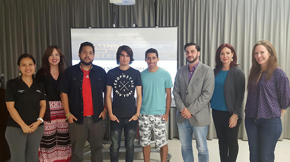
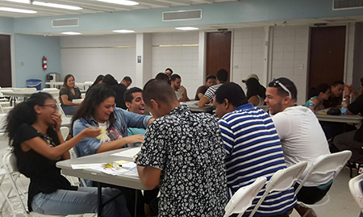
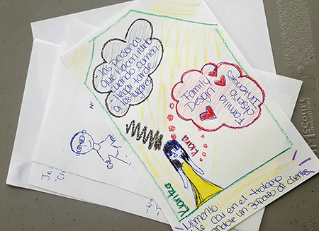

The road to integrating innovation and entrepreneurship in higher education is never an easy one. Pathways program co-leader Alizabeth Sanchez shares how the Universidad del Turabo has propelled their campus forward despite Puerto Rico's current economic challenges.

Winners of the Universidad del Turabo's Rocket Pitch competition with Pathways team members
By Alizabeth M. Sánchez-López
Are you driving the innovation and entrepreneurship (I&E) bus at your university? If so, let me share with you our journey.
Our trip started several years ago. It was recognized that universities play a significant role in economic development through the creation and potential commercialization of knowledge. Thus, infrastructure such as student incubators, curricula, mentoring among others was in place to make this happen, but we were lacking individuals to engage in entrepreneurial initiatives.
The Pathways to Innovation Program was our first significant crossroad. We had to stop and choose where to go from there. Although the destination was clear (innovation and entrepreneurship at the university), there were many potential routes that could take us there. Our previous travels had shown that although our I&E journey was full of pretty cool places and stops, there weren’t many friends to join us on this journey. We needed faculty and students willing to get on board. The Pathways to Innovation Program helped us draw a map to identify the route to take. By examining the current assets on campus, we were able to identify what we needed to put in place to reach our destination. Although others might have selected the commercialization route, it was clear for us that we needed to stimulate the students' I&E mindset in order to make that infrastructure work. It is only after developing an I&E culture at our university that we would be able to embark in commercialization.
Initially, our efforts were the equivalent of a horn going off in a residential area at 1:00 o’clock in the morning. People came out to see what and who was making such noise. The good thing was that people were coming out to take a look. So, how did we make noise? We developed as many initiatives as we could. We designed the Melting Pot Series Program to develop the I&E mindsets of students and faculty by increasing awareness of the topics and creating spaces to foster interdisciplinary collaboration. The initiatives conducted through the Melting Pot Series weren’t necessarily huge events, but rather were a large number of small activities that started to catch people’s attention. Examples of these are:
(1) Introduction of I&E content in all freshman courses across disciplines
Freshman seminars at our university are guided by a book developed by multiple professors at the university. A module on I&E was included in this book to help create awareness in all seminars.

(2) Connecting students working in projects with faculty and students from other disciplines
We targeted faculty members who teach project courses in different disciplines to identify students interested in furthering their projects but who needed collaboration from other disciplines. Through these informal relationships, students and faculty from different disciplines started to work together. This in turn helped eliminate barriers among siloed departments and supported an environment of collaboration where people started to recognize synergies among disciplines.
(3) Organizing fun events where students interact and develop I&E competencies through games
To develop a culture that values I&E, we need to create excitement. Fun is a great tool to achieve this. Making students interact through games while developing competencies such as creativity, problem solving, pitching, among others, helps them develop an interest in I&E while fostering spontaneous relations among disciplines. Students started to recognize the value of other disciplines and even started to understand and respect the different languages spoken by different disciplines.

(4) Organizing Video Rocket Pitch Competitions
Students shared their projects in a creative manner without the stress of everyone looking at them. Finalists were selected to pitch at one of the Melting Pot series events or at the Entrepreneurial Fair held by the School of Business and Entrepreneurship. It was interesting to find an increased participation of STEM disciplines in competitions that were previously dominated by business students. Moreover, spontaneous relations started to form. Students and faculty identified projects that interested them and started selecting these to continue in other class projects.
Remember, when making noise, you don’t have to plan huge events. More often than not, you won’t have the resources and time to manage these. Just try as many small initiatives as you can on a continuing basis. The goal is to capture people’s attention, hence the more initiatives you do the higher the probability someone will stop to take a look.
As we started catching people’s attention, some started to get on the bus. We had more passengers than before but still a few drivers who start to get weary. It’s only normal since it is a long and continuing drive. We needed to teach how to drive. At this stage, faculty training became crucial.
Because of this we decided to make a stop at the Institute of Faculty Development in the university. The Institute got on board and became a valuable partner. Not only did it motivate faculty members, as workshop hours are certified, but it supported marketing and logistics. Similar to making noise, training was done on a continuing basis. A total of five experiential learning workshops were developed each semester. The purpose of the workshops was to provide faculty members the tools and methodologies to promote entrepreneurship and innovation in their classroom. The faculty training initiative allowed us to get more passengers while recruiting new drivers. Moreover, the dynamics of the workshops resulted in the formation of relations among faculty members from different disciplines. This in turn is supporting an environment of collaboration among departments, a crucial element when promoting I&E at the university level.
Today a new and exciting challenge awaits us: Help drivers design their own trip. As always, we’ll learn throughout the journey. However, we are hopeful that the trail left along the way will serve as a roadmap to continue creating new pathways to innovation at Universidad del Turabo.
About the author:
Alizabeth M. Sánchez-López is a professor in the School of Business and Entrepreneurship at the Universidad del Turabo. She is the co-leader of her school’s Pathways to Innovation Program team.